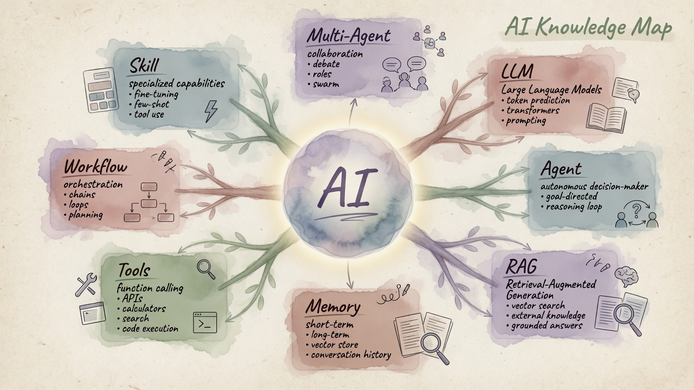
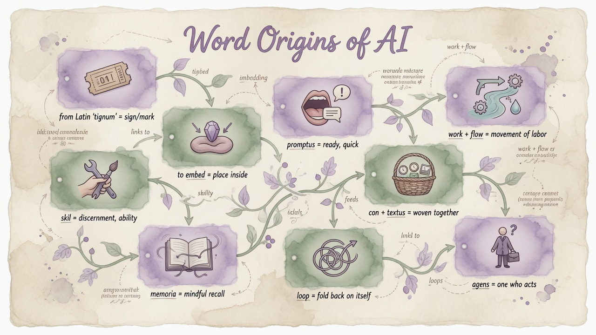
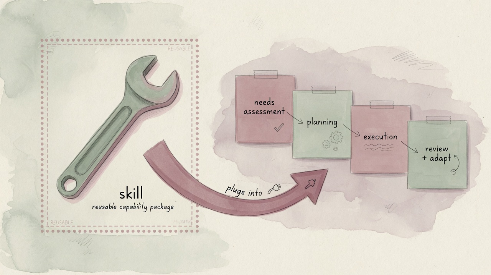
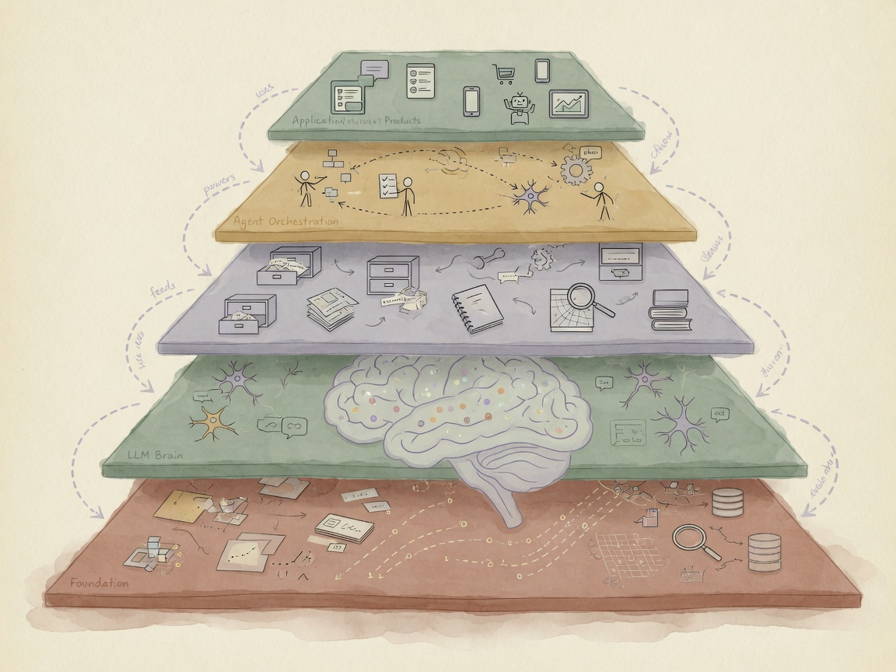

附录 · 结构地图
结构地图
主线之外的「总览图」。建议先走完 主线六站，再用本页复习名词挂在哪一层。
先认架子：模型 → 能力外挂 → 编排流程 → 你点开的 App。
展开：本页与整站如何拼
结构地图 = 目录树；发展史 = 时间因果；通识 = 零件说明书；词库 = 随查；架构/具身/边界 = 工程与验收。
01 · 总图
AI 通识长什么样
中心是「能协作、能办事的 AI 系统」，向外是模型、能力外挂、编排方式。

这张图是什么
整站知识的「目录树」。后面通识、词库、架构页都是树上的叶子展开。
和你有关
你每天用的聊天 App 多在最外层应用；里面其实叠了模型+可能的检索/工具。
你怎么用
遇到生词先在图上「找位置」；找不着再去词库搜。别一上来钻进框架名。
02 · 名词如何相连
从「字」到「能办事」的链条

表示：Token · Embedding
电脑如何表示语言。和你有关：影响「能塞进多少对话」、语义搜索是否准。
交互：Prompt · Context
你怎么说、桌上放什么材料。和你有关：同一模型，写法不同效果天差地别。
能力：RAG · Tool · Skill · Memory
从「会说」变成「有据、能做、会记」。和你有关：企业助手、插件、长期项目都靠它们。
运行：Workflow · Agent · Loop
多步任务如何推进。和你有关：自动流程 vs 会自己决策的助理，选型不同。
03 · 最易混的一对
Skill vs Workflow

🧰 Skill
是什么：可复用能力包。
和你：插件、个人提示模板库。
怎么用：把高频任务固化成一套说明+格式。
🛤️ Workflow
是什么：有顺序的步骤网。
和你：审批流、内容生产流水线。
怎么用：步骤稳定就画流程；开放探索再上 Agent。
04 · 五层栈
从底座到你点开的 App

⑤ 应用
你直接用的产品界面
↓
④ 编排
Workflow / Agent / 多 Agent
↓
③ 能力
RAG · Tool · Skill · Memory
↓
② 模型
LLM / 多模态
↓
① 底座
数据 · 算力 · 训练（了解即可）
05–06 · 往后两页在干什么